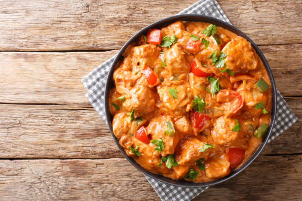

Chicken Salad

Chicken Salad Ingredients
These are the ingredients you'll need to make this basic chicken salad recipe:
Chicken:
You'll need cooked chicken, chopped or shredded. If you have leftover roast chicken, grilled chicken, or rotisserie chicken, chicken salad is a great way to use it all up. You can also use canned chicken to make chicken salad (drain it first), or you can cook chicken for chicken salad. Use white or dark meat, or a combination of both if you prefer.Mayonnaise:
Creamy mayonnaise binds together all the separate ingredients for chicken salad into a satisfying mixture of flavors and textures. Use your choice of regular or reduced fat mayonnaise. In this chicken salad recipe, the mayonnaise is enhanced with a tablespoon of lemon juice for brightness and a ¼ teaspoon of ground black pepper. Taste the dressing before mixing it with the chicken; you may find it needs a little salt or other flavor-booster from your spice collection.Celery:
Fresh, crisp celery adds both flavor and crunch. Be sure to chop the celery into small, uniform pieces so it's easier to eat.Almonds:
Here's the secret ingredient that makes this chicken salad recipe stand apart. Blanched slivered almonds (available at any grocery store) are quickly pan-toasted to bring out their nutty flavor, and then added to the chicken salad mixture.

How to Make Chicken Salad
There's a lot you can do with a good basic recipe for chicken salad. Add minced fresh herbs like parsley, chives, basil, or tarragon. Add fresh grapes for juicy little bursts of flavor. Add cooked pasta to stretch the chicken salad into a larger meal. (You'll have to increase the amount of mayonnaise mixture to cover the pasta.) Add chopped apples and walnuts to make it a Chicken Waldorf Salad. Experiment with add-ins to make this chicken salad recipe your own.
- Gather all ingredients.
- Place almonds in a frying pan. Toast over medium-high heat, shaking frequently. Watch carefully, as they burn easily.
- Mix together mayonnaise, lemon juice, and pepper in a medium bowl.
- Toss with chicken, toasted almonds, and celery.
- Enjoy!